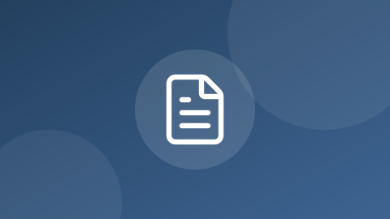

Kit d'urgence 72h du gouvernement : ce que recommande le guide
Le 20 novembre 2025, le Gouvernement a publié le guide « Tous responsables », préparé par le SGDSN. Il invite chaque foyer à pouvoir tenir 72 heures en autonomie.

Informations pratiques, sources officielles (guide « Tous responsables » (SGDSN, 2025)). Elles ne remplacent pas les consignes des autorités. En cas d'urgence, appelez le 112 et suivez les consignes de la préfecture, de la radio et de FR-Alert.
Les trois messages du guide
Bien préparés
- Constituer un kit d'urgence
- Préparer un plan familial
Bien protégés
- Connaître les risques près de chez soi
- Reconnaître les alertes : sirène, FR-Alert. Chaque premier mercredi du mois, la sirène retentit pour un essai d'une minute et quarante et une secondes ; l'alerte réelle, elle, comporte trois cycles entrecoupés de cinq secondes de silence, et la fin d'alerte est signalée par un son continu de 30 secondes.
Tous engagés
- Entraide entre voisins
- Bénévolat, réserves de sécurité civile
Les trois priorités du kit
Boire et manger
- 6 litres d'eau par personne
- Nourriture sans cuisson
Avoir chaud
- Vêtements chauds, couverture de survie
- Lampe et piles
Se soigner
- Trousse de secours
- Médicaments et ordonnances
La liste détaillée : kit de survie 72h, la liste complète.
À savoir
Questions fréquentes
Le kit d'urgence 72h est-il obligatoire ?
Non. Le guide « Tous responsables » est une recommandation du Gouvernement à tous les citoyens, pas une obligation.
Le gouvernement distribue-t-il un kit gratuit ?
Le guide donne une liste à constituer soi-même ; il ne prévoit pas de distribution de kit. Méfiez-vous des offres présentées comme « kit officiel » payant.
Où lire le guide officiel ?
Sur info.gouv.fr/risques et sur le site du SGDSN (sgdsn.gouv.fr). Le guide existe aussi en version facile à lire et à comprendre (FALC) et en version à imprimer, toutes deux téléchargeables gratuitement. Lien direct : télécharger le PDF du guide.
À lire aussi

Le guide officiel en PDFOù télécharger le PDF officiel du guide « Tous responsables » (kit d'urgence 72h), ce qu'il contient, et une checklist gratuite à imprimer et cocher.

 Arnaques au « kit gratuit »Faux « kit gratuit du gouvernement » par SMS ou site trompeur : comment vérifier et où signaler (33700, internet-signalement.gouv.fr). L'État ne vend aucun kit.
Arnaques au « kit gratuit »Faux « kit gratuit du gouvernement » par SMS ou site trompeur : comment vérifier et où signaler (33700, internet-signalement.gouv.fr). L'État ne vend aucun kit.